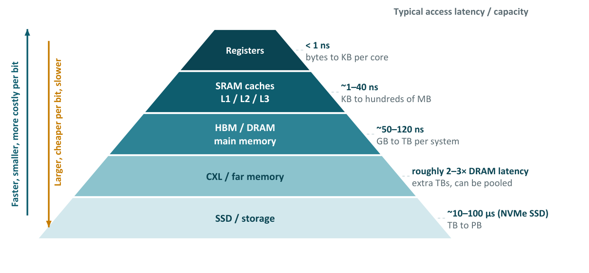
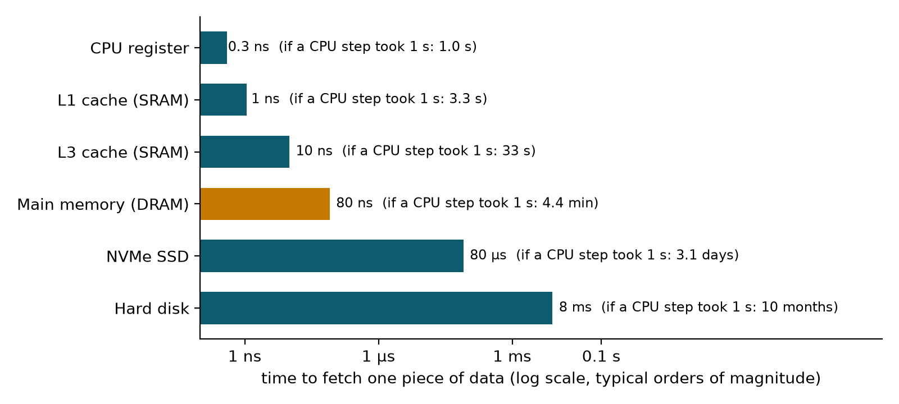
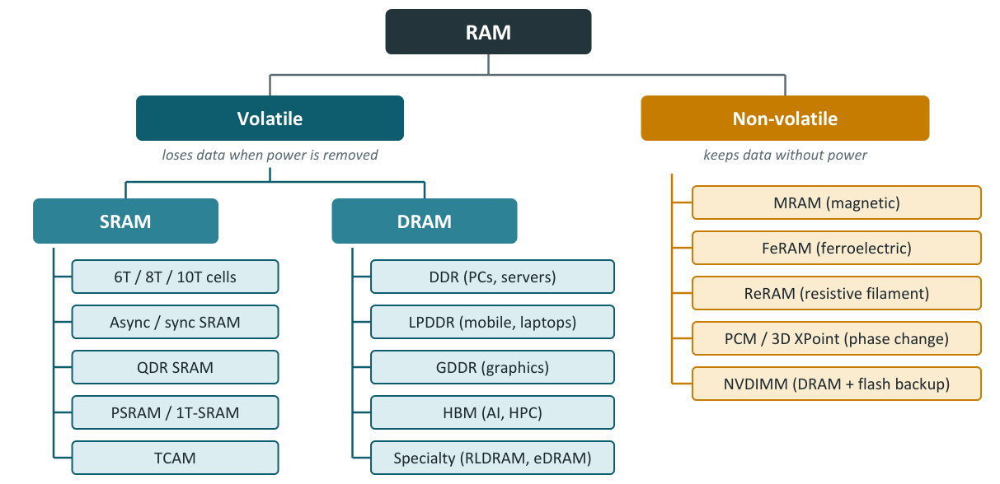

Chapter 1: What RAM Is and Why There Are Several Kinds¶
This chapter lays the groundwork for everything that follows. It explains what random-access memory does, how a bit and a byte relate to the capacity figures on a box, why computers stack several kinds of memory into a hierarchy, and how the family of RAM technologies is organised. It then defines the vocabulary of speed: clock frequency, megatransfers per second, bus width, bandwidth and latency, with the two formulas that every memory engineer uses daily. Later chapters use these terms without further comment, so it is worth working the examples here with a pencil.
1.1 What RAM is¶
Random-access memory is memory in which any location can be read or written in about the same time, no matter which location was used last. The processor gives the memory an address, a number that names a location, and the memory returns or stores the data held there. This is different from a tape or a spinning disk, where reaching data that is far from the current position takes much longer. In a computer, RAM holds the programs and the data the processor is working on right now, while slower storage (an SSD or a disk) holds everything else.
A kitchen is a useful picture. The processor is the chef, the SSD or hard disk is the pantry, huge but far away, and RAM is the counter next to the stove: smaller, but everything on it can be reached at once. Before cooking, ingredients are brought from the pantry to the counter. In the same way every program and file that is opened is copied from storage into RAM first. More RAM means more things can be open at once without the machine slowing down, in the way that a bigger counter lets the chef work on several dishes together.
Almost all RAM is built from millions or billions of tiny storage cells, each holding one bit. The cells are arranged in a grid of rows and columns. A horizontal wire called the wordline (WL) selects a row, and vertical wires called bitlines (BL) carry data in and out of the cells of that row. Small amplifiers at the edge of the array, the sense amplifiers, detect the very small signals on the bitlines and turn them into clean 0s and 1s. The next two chapters look inside these cells and this grid in detail.
Typical amounts are a few gigabytes to a few tens of gigabytes in a laptop or desktop and one to four terabytes in a large server.
1.2 Bits, bytes and capacity¶
A bit holds one of two states, 0 or 1, like a light switch that is off or on. Eight bits make a byte, which has \(2^8 = 256\) possible patterns, enough for one letter of text. Every photograph, song and program is a very long row of such switches.
The size of the numbers involved is easy to underestimate. A memory module that stores 32 GB of data holds \(32 \times 2^{30} \times 8 = 2^{38}\) bits, which is about 275 billion switches. Each one is a tiny electric charge that must be read and rewritten correctly, millions of times per second.
Example 1.1: How many cells in 32 GB?
- 1 GB of DRAM is \(2^{30}\) bytes, so 32 GB is \(32 \times 2^{30} = 2^{5} \times 2^{30} = 2^{35}\) bytes.
- Each byte is 8 bits \(= 2^3\), so the total is \(2^{35} \times 2^{3} = 2^{38}\) bits.
- \(2^{38} = 274{,}877{,}906{,}944\), about \(2.75 \times 10^{11}\), or roughly 275 billion bit cells.
Two unit conventions are used throughout the book. Capacity of memory is binary: a "gigabyte" of DRAM is \(2^{30}\) bytes, and chip sizes in gigabits (Gb) are binary multiples too. Bandwidth is decimal: 1 GB/s is 1000 MB/s. Mixing the two is a common source of small arithmetic errors, so units are always stated.
1.3 The memory hierarchy¶
No single memory is fast, large, cheap and low-power at once, so computers combine several. Small, very fast memories sit close to the processor and hold the data used most often; each level farther away is larger and cheaper per bit but slower. Hardware and software move data between the levels automatically, so most accesses are served by the fast levels. Figure 1.1 shows the levels as they stood in 2026; the numbers are typical orders of magnitude, not exact values for any particular machine.

Registers and caches are SRAM, built inside the processor. Main memory is DRAM, the main subject of this book. A newer tier, CXL memory, sits between local DRAM and storage; it is DRAM reached over PCIe-style wires and is described in Chapter 8.
The gaps between levels are so wide that a logarithmic scale is needed to draw them. Figure 1.2 repeats the typical times and adds a second reading: if one processor step took one second, how long would each fetch take?

The scaled figures make the point vividly. If a register access takes about one second, a DRAM access takes more than four minutes, an SSD more than three days and a hard disk about ten months. A processor that had to wait for storage on every access would spend nearly all its time idle. DRAM is roughly a thousand times faster than an SSD (80 ns against 80 µs), and that is why the working set of a program is kept in RAM.
1.4 Volatile and non-volatile memory¶
Volatile memory loses its contents when power is removed. SRAM and DRAM, the two technologies behind almost all working memory, are volatile. Non-volatile memory keeps its data with the power off. Flash memory, used in SSDs and USB sticks, is non-volatile but is not true RAM: it is written in large pages, erased in even larger blocks and wears out after a limited number of writes. A family of emerging non-volatile RAMs (MRAM, FeRAM, ReRAM, phase-change memory) tries to combine RAM-like byte access with non-volatility; Chapter 9 describes them.
1.5 The RAM family tree¶
Figure 1.3 groups every memory covered in this book. The volatile branch splits into SRAM (on-chip memories and small standalone parts) and DRAM, which itself branches into families tuned for different goals: capacity and cost (DDR), power (LPDDR), per-pin speed (GDDR) and raw bandwidth (HBM). The non-volatile branch holds the emerging memories plus NVDIMMs, which combine DRAM with flash.

A quick table fixes the personalities of the main families before the later chapters study each one in turn.
| Type | Personality | Where you find it | Speed today (approx.) |
|---|---|---|---|
| DDR5 | The all-rounder: big capacity, plug-in modules | Desktops, servers | 4800 to 8800 MT/s per pin |
| LPDDR5X | The energy saver: low voltage, soldered next to the processor | Phones, thin laptops, Apple Silicon Macs | 8533 to 10,700 MT/s per pin |
| GDDR7 | The sprinter: very fast pins, runs hot | Graphics cards | 28 to 32 Gbps per pin |
| HBM3E | The skyscraper: 8 to 12 dies stacked, 1024 wires wide | AI accelerators | about 1.2 TB/s per stack |
| SRAM | The pocket notebook: tiny, fastest, no refresh | Caches inside every processor | about 1 ns access |
1.6 Speed terms: MHz, MT/s, Gbps and bandwidth¶
Memory speeds are quoted in several units that are easy to confuse.
- Clock frequency (MHz) is how many clock cycles occur per second. Modern memory moves data on both the rising and the falling clock edge, so the clock number is half the data rate. Marketing labels such as "DDR5-6400" give the data rate, not the clock.
- MT/s (megatransfers per second) counts how many times per second each data pin carries a new symbol. DDR5-6400 runs at 6400 MT/s on a 3200 MHz clock.
- Gbps per pin is the same idea in larger units, used for very fast interfaces. 32 Gbps per pin for GDDR7 means 32,000 MT/s. With multi-level signalling a transfer can carry more than one bit (Section 3.4).
- Bus width is how many data pins move in parallel: 64 bits for a standard DDR DIMM, 16 bits per LPDDR5 channel, 32 bits per GDDR chip, 1024 or 2048 bits per HBM stack.
- Bandwidth is the total data moved per second: data rate multiplied by bus width.
Example 1.2: Peak bandwidth of one DDR5-6400 DIMM
- Data rate 6400 MT/s on a 64-bit bus: \(6400 \times 64 = 409{,}600\) megabits per second.
- Divide by 8 bits per byte: \(409{,}600 / 8 = 51{,}200\) MB/s.
- Divide by 1000 to get GB/s: 51.2 GB/s.
- A desktop with two such channels has a peak of \(2 \times 51.2 = 102.4\) GB/s.
- Real programs typically reach 70 to 90 per cent of the peak, because of refresh, bank conflicts and switching between reads and writes. For the dual-channel desktop that is about 72 to 92 GB/s.
For per-pin rates in Gbps the answer comes out directly in GB/s when multiplied by the width and divided by 8, which is how GDDR and HBM figures are usually worked.
1.7 Latency: CAS latency and nanoseconds¶
Latency is the delay between asking for data and receiving it. The most quoted number is CAS latency (CL): the number of clock cycles between a column read command and the first data appearing. Because the clock gets faster with each generation, CL has to be converted to nanoseconds before parts can be compared. The clock in MHz is half the data rate in MT/s, and one clock cycle lasts \(1000 / \text{MHz}\) nanoseconds, so a cycle lasts \(2000 / \text{data rate}\) nanoseconds. Hence
Example 1.3: The same ten nanoseconds twice
- DDR4-3200 CL16: \(16 \times 2000 / 3200 = 10\) ns.
- DDR5-6000 CL30: \(30 \times 2000 / 6000 = 10\) ns.
- DDR5-4800 CL40: \(40 \times 2000 / 4800 \approx 16.7\) ns.
The first two answers are identical. The DRAM array has barely become faster in twenty years, so the extra speed of each generation goes into bandwidth and not into latency. The full time for a random access from a processor (cache miss, controller queueing, opening a row, CAS and the trip back) is typically 60 to 120 ns, much more than the CAS figure alone.
Do not compare CL numbers across generations
A DDR5 module with CL40 is not slower than a DDR4 module with CL16 in the sense the numbers suggest. Always convert to nanoseconds first.
1.8 Summary¶
- RAM gives any location about the same access time; it holds what the processor is working on, while storage holds the rest.
- A bit is one of two states; a byte is eight bits; 32 GB of DRAM holds about 275 billion cells.
- The memory hierarchy exists because speed, size and cost pull in opposite directions. DRAM is about a thousand times faster than an SSD; caches are built from SRAM.
- RAM divides into volatile (SRAM, DRAM) and non-volatile families; flash is not true RAM.
- Bandwidth is data rate times bus width divided by 8 (decimal units); peak figures are never fully reached.
- CAS latency must be converted to nanoseconds: \(\text{CL} \times 2000 / \text{MT/s}\).
1.9 Exercises¶
Exercise 1.1. A laptop has 16 GB of DRAM. How many bit cells is that, in powers of two and approximately in decimal?
Answer
\(16 \times 2^{30} \times 8 = 2^{4} \times 2^{30} \times 2^{3} = 2^{37}\) bits \(= 137{,}438{,}953{,}472\), about \(1.37 \times 10^{11}\) or 137 billion cells.
Exercise 1.2. Compute the peak bandwidth of a single 64-bit DDR5-4800 DIMM and of a dual-channel DDR5-6400 desktop. By what factor is the second larger?
Answer
DDR5-4800: \(4800 \times 64 / 8 / 1000 = 38.4\) GB/s. Dual-channel DDR5-6400: \(2 \times 51.2 = 102.4\) GB/s. The ratio is \(102.4 / 38.4 \approx 2.67\).
Exercise 1.3. Convert to nanoseconds and rank the three modules: DDR4-2400 CL17, DDR5-5600 CL36, DDR5-6400 CL32.
Answer
DDR4-2400 CL17: \(17 \times 2000 / 2400 = 14.17\) ns. DDR5-5600 CL36: \(36 \times 2000 / 5600 = 12.86\) ns. DDR5-6400 CL32: \(32 \times 2000 / 6400 = 10.0\) ns. From lowest latency to highest: DDR5-6400 CL32, DDR5-5600 CL36, DDR4-2400 CL17.
Exercise 1.4. DRAM takes about 80 ns to fetch a value and an NVMe SSD about 80 µs. If one processor step took one second, how long would each fetch take? Use 0.3 ns for the step.
Answer
The scale factor is \(1\,\text{s} / 0.3\,\text{ns} = 3.33 \times 10^{9}\). DRAM: \(80 \times 10^{-9} \times 3.33 \times 10^{9} = 267\) s, about 4.4 minutes. SSD: \(80 \times 10^{-6} \times 3.33 \times 10^{9} = 267{,}000\) s, about 3.1 days. The ratio is 1000.
Exercise 1.5 (Assignment 1: a bandwidth and capacity calculator). Write a small Python script with two functions, bandwidth(mts, width_bits) returning GB/s and capacity(chips, gbit_per_chip, ecc_chips) returning the data capacity and the raw capacity in GB. Use them to print a table for DDR5-4800 and DDR5-6400 on a 64-bit bus and for a module of 20 chips of 16 Gb of which 4 are ECC chips.
Answer
def bandwidth(mts, width_bits):
"""Peak bandwidth in GB/s (decimal)."""
return mts * width_bits / 8 / 1000
def capacity(chips, gbit_per_chip, ecc_chips):
"""Return (data GB, raw GB); 1 GB = 8 Gb."""
raw = chips * gbit_per_chip / 8
data = (chips - ecc_chips) * gbit_per_chip / 8
return data, raw
for rate in (4800, 6400):
print(f"DDR5-{rate}, 64-bit: {bandwidth(rate, 64):.1f} GB/s")
print("module:", capacity(20, 16, 4))